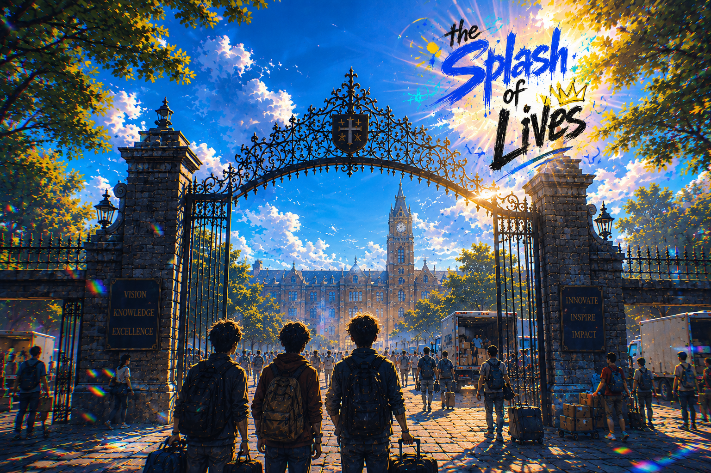

A serialised campus novel · SOUL Productions

The Splash of Lives begins on a sweltering summer morning at the iron gates of St. Cross College of Technology in Maharashtra — the kind of morning where the air smells like ambition, cheap instant noodles, and the low-grade dread of having absolutely no idea what you're doing.
Three boys arrive. Separately. With very different problems already in motion. They don't know each other yet. They're about to.
Charismatic, chronically broke, and equipped with a silver tongue that has no business being that persuasive. Kanishk can talk his way into a meal, out of a due assignment, and onto a guest list he was never invited to. The problem is he's always scheming and the schemes always involve spending money he doesn't have.
All Joseph wants is to study. That's genuinely, sincerely it. But he is highly observant and too decent to walk away when something's clearly going wrong. He can see every disaster coming from three steps away. He gets involved anyway. Every single time.
Loyal to a fault, built like an athlete, and completely non-functional around girls. Somyonil will sprint across campus for you without a second thought but freeze solid if someone he likes says hello. His communication system works with everyone except the people he most wants to impress.
The story opens with three separate arcs running in parallel — three boys, three different problems, three dormitory rooms in the same block, none of them aware the others exist. The prologue follows each of them individually as they settle into St. Cross and each stumble headfirst into a problem entirely their own.
Kanishk's arc involves money — or the spectacular lack of it — and the ill-advised plan he's already cooking to fix that. His silver tongue is an asset. His judgment is a liability.
Joseph's arc involves trying to study and somehow ending up in a situation that has nothing to do with his textbooks. He didn't ask for this. He just noticed something. He couldn't let it go.
Somyonil's arc involves the athletics track, a loyalty that runs deeper than sense, and the increasingly humiliating consequences of being physically capable of everything except a normal conversation with the girl he can't stop thinking about.
These three arcs build independently. Then they collide — in chaos, in the way all the best things happen — and out of that collision comes a friendship that is loud, messy, and completely irreplaceable.
That collision is where the story really begins.
The Splash of Lives is a slice of life story that commits fully to being a bit of a mess — the same way college is a bit of a mess, the same way the friendships you make in those years are. It's unhinged, occasionally ridiculous, and punctuated with moments where the comedy suddenly drops out and something real is sitting there instead.
There's no grand prophecy. No chosen one. Just three boys at a college gate on a summer morning, each dragging a suitcase and a problem, about to walk into the same building and change each other's lives without meaning to.